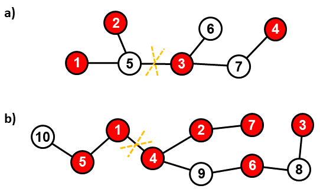

Dělení korálků
Anna a Zita najdou na půdě několik velkých korálků pospojovaných provázky do souvislého celku. Jedná se zřejmě o hračku jejich maminky nebo babičky.
Při bližším prozkoumání vidí, že korálky jsou dvou barev, bílé a červené. Provázky vždy spojují dvojici korálků. Lze vypozorovat,
že z každého korálku vychází jeden, dva, nebo tři provázky.
Jejich tatínek by řekl, že celá struktura korálků a provázků se dá popsat jako souvislý graf bez cyklů, tedy strom, přičemž stupeň každého uzlu je
maximálně 3. Děvčatům se velmi líbí červené korálky, bílé korálky je příliš nezajímají. Přemýšlejí, jak si mají nález co nejspravedlivěji rozdělit,
zároveň jej ale nechtějí moc poškodit. Dohodnou se, že přestřihnou pouze jeden provázek a každá z nich si vezme jednu ze dvou vzniklých částí.
Chtějí vybrat provázek k přestřihnutí tak, aby rozdíl v počtu červených korálků obou částí byl co nejmenší.
Úloha
Je dána struktura korálků a provázků. Určete, který provázek mají Anna a Zita přestřihnout, aby absolutní hodnota rozdílu počtů červených korálků obou částí, které přestřihnutím vzniknou, byla minimální.
|

Obrázek 1. Příklady soustav korálků (uzly) a provázků (hrany). a) Nejlepší rozdělení na dvě části získáme přestřihnutím provázku, který spojuje korálky 3 a 5. Obě části pak obsahují dva červené korálky. Jiná možnost, jak docílit tohoto stavu, neexistuje. b) Nyní lze docílit v nejlepším případě toho, že jedna část má 2 a druhá část 5 červených korálků. Můžeme přestřihnout například provázek spojující korálky 1 a 4. Ke stejnému výsledku vedou i další možnosti. Minimální rozdíl v počtu červených korálků vzniklých částí je tedy 3, nemůže být menší. |
Vstup
Na prvním vstupním řádku jsou dvě celá čísla N a R oddělená mezerou. Číslo N je počet všech korálků, číslo
R je počet červených korálků. Korálky jsou číslované od 1 do N, přičemž červené korálky jsou číslované od 1 do R.
Následuje N − 1 řádků. Na každém tomto řádku je dvojice čísel U1, U2,
krerá reprezentuje provázek spojující korálky s čísly U1 a U2. Provázky jsou na vstupu zapsané v náhodném pořadí.
Platí 2 ≤ N ≤ 9 × 105 a 0 ≤ R ≤ N.
Výstup
Výstup obsahuje jeden řádek, na kterém jsou dvě čísla U1, U2 oddělená mezerou. Tato čísla splňují U1 < U2 a reprezentují krajní korálky provázku, který se má přestřihnout k dosažení nejlepšího rozdělení červených korálků. Existuje-li jiný provázek s krajními korálky V1, V2, kde V1 < V2, jehož přestřihnutí vytvoří také dvě části s minimálním rozdílem v počtu červených korálků, potom musí platit buď U1 < V1 a nebo U1 = V1 & U2 < V2. Znamená to tedy, že v případě více nejlepších možností se na výstupu očekává ta, která je nejmenší v lexikografickém uspořádání podle čísel krajních korálků.
Příklad 1
Vstup7 4 1 5 5 2 4 7 3 6 7 3 5 3Výstup
3 5Data a řešení Příkladu 1 jsou znázorněna na Obrázku 1a).
Příklad 2
Vstup10 7 4 1 7 2 6 9 10 5 5 1 4 9 8 3 8 6 4 2Výstup
1 4Data a řešení Příkladu 2 jsou znázorněna na Obrázku 1b).
Veřejná data
Veřejná data k úloze jsou k dispozici. Veřejná data jsou uložena také v odevzdávacím systému a při
každém odevzdání/spuštění úlohy dostává řešitel kompletní výstup na stdout a stderr ze svého programu
pro každý soubor veřejných dat.
Veřejná data